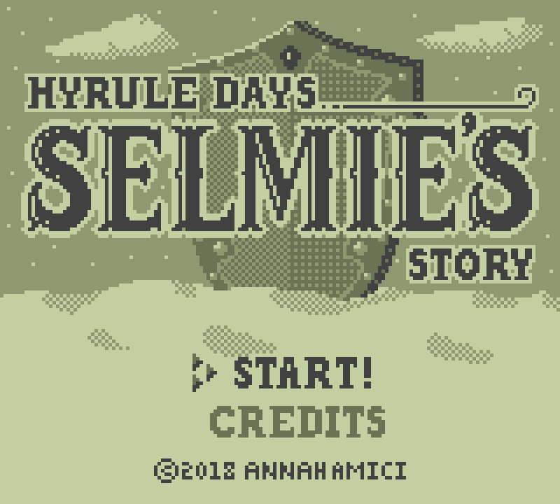
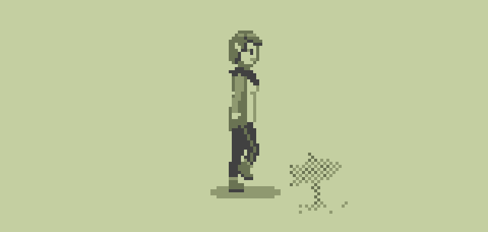
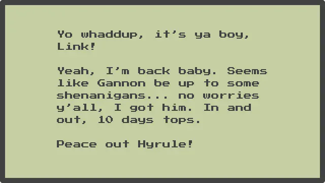
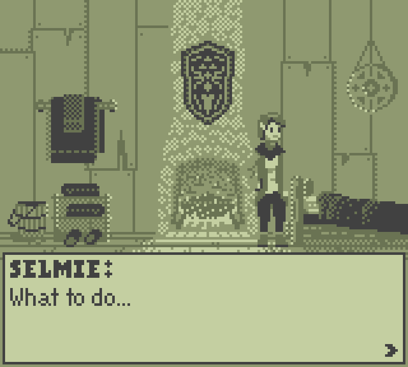
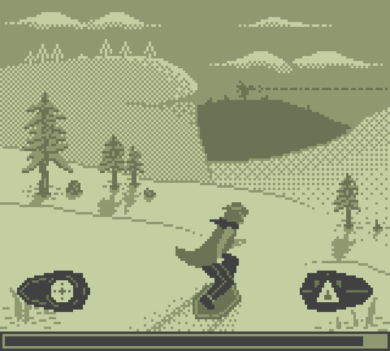
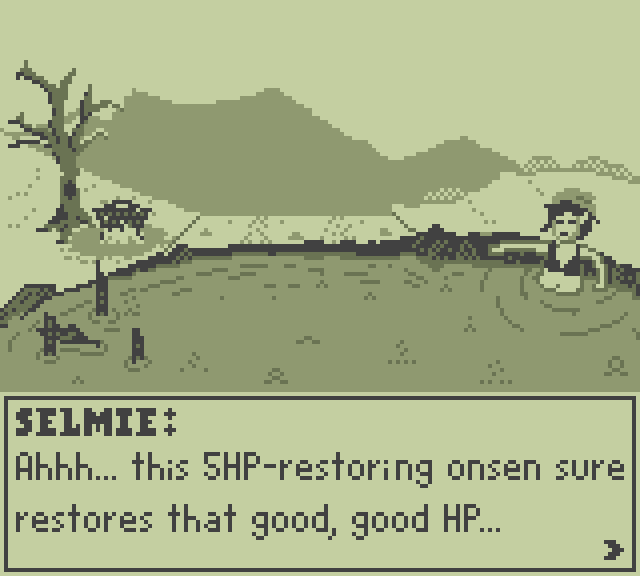
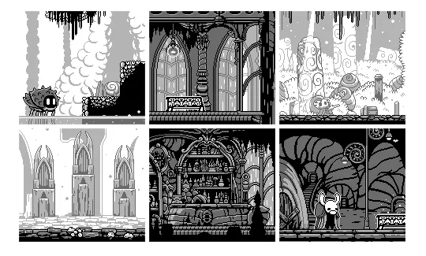

This post outlines some game mechanics, a story, and a few key frames in an effort to preserve the work I’ve put in on this unfinished game jam idea. Should anyone feel the desire to continue development or use these concepts as a base for their own game, by all means feel free.
Inspiration for Selmie’s Story came mainly from two places: 1. The meticulously detailed world of Breath of the Wild and 2. Witchwood Academy, one of many impressive games produced during a Game Boy game jam. I was particularly impressed by the polish and beauty of Witchwood Academy, which tells an engaging and self-contained story within a rather restrictive set of graphical constraints.
I had also recently beaten BoTW and, after being let down by the (lack of) post-endgame gameplay, I dove back in to keep exploring Hyrule. Without much in the way of quests anymore, I tend to make up my own stories about the characters and the land. One such character you’re sure to have encountered is the legendary shield surfer, the Duchess of Downhill, Selmie.

She spends her time relaxing in her cabin in the Hebra Mountains, having long since retired from surfing herself. Other lore scattered about shows she keeps the Hebra Trailhead Lodge well-stocked with supplies for travellers in need and had also set up flags on the slopes to guide surfers and hikers to safety. It’s not hard to imagine that she’s also explored other features of the mountain after stumbling across a hidden hot spring with a stockpile of wood or a shield buried in the snow…
With these thoughts and a bored mind, I began imagining what Selmie’s everyday life could be like and whether, like Tingle before her, she could even have her own spinoff game.
• • •
…when Selmie one day wakes up to find she’s received a letter with the royal seal—how curious!

Wow, the Hero of Hyrule, back to rid the land of evil! (kinda seems like a jerk, though). Regardless, Selmie supposes she must now consider a life after Gannon, and with only 10 days to prepare! Standing in her cozy cabin, she surveys her options for the day: rest upon her comfy bed, grab a shield and hit the slopes, or hike over to the hot springs for a relaxing soak.

• • •
Selmie heads outside, preparing to descend the mountain and restock the trailhead lodge. The mechanics of the following minigame are meant to test players’ memory and reaction times.

Gameplay consists of 10 consecutive decisions on which path to take down the mountain. Each time, players will need to choose to go left or right, one of which is an easy path and the other hard. However, the directions and the difficulty of the path randomly swap, so do pay attention!
If players take the hard path too many times, Selmie will suffer a crash. Go easy too much and her journey will be prolonged, requiring her to spend the night on the mountain. Both of these failures will result in her losing the chance to choose an activity the next day as she recuperates. As a further challenge, there is no on-screen counter for the choices, only a countdown clock, so players will need to keep track of the balance in their head. Get to the bottom with a more-or-less even result and a point will be added to Selmie’s interest in surfing, determining her endgame action.
Taking Selmie to the hot springs results in a much more relaxing experience than shield surfing. ♨ A total of 10 different scenarios exist, from which one would be pulled for each day she visits. For example, one day she could be boiling an egg in the spring, while the next, she would need to hide behind the rocks as a party of bokoblins decide to set up camp in the area!

Additionally, this scene can be used to deliver some introspective dialogue helping to build up Selmie’s world and flesh her out as a unique character. Questions could also be posed to the player, in order to give them some agency in Selmie’s development.
• • •
We all have days when we just want to stay in bed — especially if there’s a blizzard outside! For Selmie too, it’s always an option to simply crawl back under the covers. Sometimes, that’s all you can do and that’s okay.
• • •
After 10 days of activities, Selmie climbs to a good vantage point and turns her eyes towards Hyrule Castle. Sure enough, the spectre of Calamity Gannon has disappeared and the sun is shining through the clouds as Zelda and the Hero of Hyrule reunite. She reflects on the past 10 days and decides how she would like to spend the rest of her time…
Spent most of your time shredding the gnar? Selmie decides to open up a shield surfing school on the mountain (and maybe even tame some of the rhinos to pull learners back up the slope)!
Mostly hung out in the hot spring? She outlines plans to expand it into an onsen for weary travellers to rest and relax, safe from the elements and any wild animals.
And if you happened to be stuck in bed for the majority of the time, she’s reflected on the needs of those lost or injured in the harsh elements and expands her system of wayfinding and supply caches.
• • •
This concept has been in the works for a real long time. The gifs above are the result of months of on-again, off-again pixel arting, so once it came time to program a challenging mix of scene changing and logic tracking, I just didn’t have it in me any more.
Looking back and comparing my art to Witchwood Academy or Gameboydemakes, I can at least identify some areas for improvement, namely using colours more strategically. While I mostly approached my art from a perspective of, “do it like normal, but only in four colours,” the examples below (source) show that using two main colours in the foreground and another two in the background provides much clearer contrast and overall crisper scenes.

Once again, this game is no longer in development and anyone who so wishes may use any of the ideas or mechanics described here to create a Selmie Story of their own. Bon chance! 🌠
END TRANSMISSION